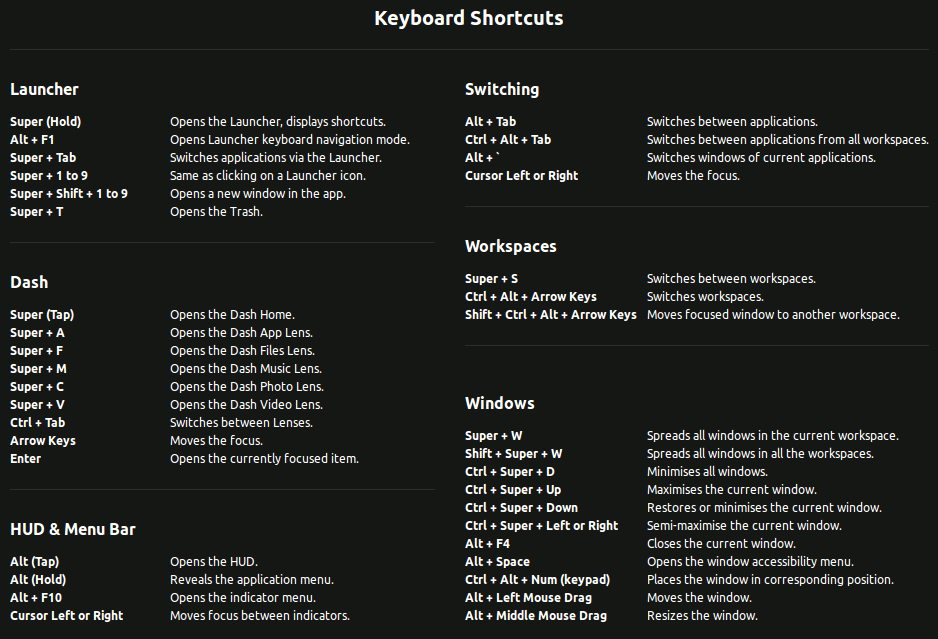
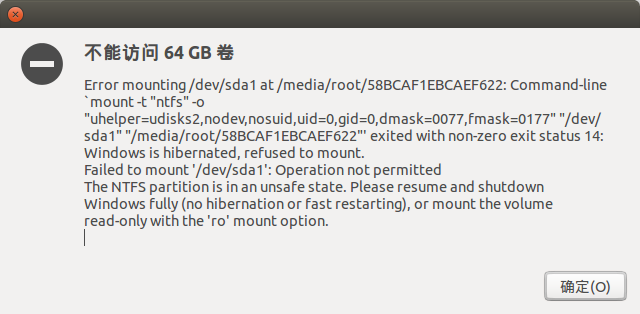
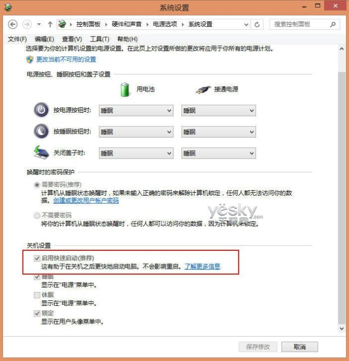

常见问题
快捷键

避免 sudo 输入密码
运行：
sudo visudo在尾部增加：
# 属于 mwn 组的用户运行 sudo 不需要密码 %mwn ALL=(ALL:ALL) NOPASSWD: ALL
进程和端口
查特定程序的进程号
pgrep redisps -e | grep redis根据端口号查进程
netstat -lnp | grep 6379$ lsof -Pnl +M -i4 | grep 20880
让命令运行在后台
方法一
nohub <cmd> &方法二
将一个或多个命名包含在“()”中就能让这些命令在子 shell 中运行中
当我们将"&"也放入“()”内之后，我们就会发现所提交的作业并不在作业列表中，无法通过jobs来查看
(ping www.ibm.com &)
卸载不常用的软件
删除libreoffice
sudo apt-get remove libreoffice-common删除Amazon的链接
sudo apt-get remove unity-webapps-common删掉基本不用的自带软件
sudo apt-get remove thunderbird totem rhythmbox empathy brasero simple-scan gnome-mahjongg aisleriot gnome-mines cheese transmission-common gnome-orca webbrowser-app gnome-sudoku landscape-client-ui-install onboard deja-dup
vi 编辑器上下左右键变成ABCD
解决办法
可以在终端中输入如下命令：
export TERM=linux
配置apt-get 源
编辑：
vi /etc/apt/sources.list增加国内源：
# 搜狐源： deb http://mirrors.sohu.com/ubuntu/ precise-updates main restricted deb-src http://mirrors.sohu.com/ubuntu/ precise-updates main restricted deb http://mirrors.sohu.com/ubuntu/ precise universe deb-src http://mirrors.sohu.com/ubuntu/ precise universe deb http://mirrors.sohu.com/ubuntu/ precise-updates universe deb-src http://mirrors.sohu.com/ubuntu/ precise-updates universe deb http://mirrors.sohu.com/ubuntu/ precise multiverse deb-src http://mirrors.sohu.com/ubuntu/ precise multiverse deb http://mirrors.sohu.com/ubuntu/ precise-updates multiverse deb-src http://mirrors.sohu.com/ubuntu/ precise-updates multiverse deb http://mirrors.sohu.com/ubuntu/ precise-backports main restricted universe multiverse deb-src http://mirrors.sohu.com/ubuntu/ precise-backports main restricted universe multiverse # 网易源： deb http://mirrors.163.com/ubuntu/ precise-updates main restricted deb-src http://mirrors.163.com/ubuntu/ precise-updates main restricted deb http://mirrors.163.com/ubuntu/ precise universe deb-src http://mirrors.163.com/ubuntu/ precise universe deb http://mirrors.163.com/ubuntu/ precise-updates universe deb-src http://mirrors.163.com/ubuntu/ precise-updates universe deb http://mirrors.163.com/ubuntu/ precise multiverse deb-src http://mirrors.163.com/ubuntu/ precise multiverse deb http://mirrors.163.com/ubuntu/ precise-updates multiverse deb-src http://mirrors.163.com/ubuntu/ precise-updates multiverse deb http://mirrors.163.com/ubuntu/ precise-backports main restricted universe multiverse deb-src http://mirrors.163.com/ubuntu/ precise-backports main restricted universe multiverse
不能识别移动硬盘
安装：
sudo apt-get install cifs-utils
双显卡设备出现未知显示器
详细：
http://www.kaijia.me/2014/04/ubuntu-14-04-unknown-display-in-dual-graphics-solved/
原因：
官方对这个错误的解释是双显卡驱动的情况下（比如Kaijia的笔记本是就是集显和N卡热切换）Ubuntu会同时读出两个显示器，显示的效果即为一个内置显示器和一个未知显示器。
解决：
sudo apt-get install bumblebee-nvidia
双显示器扩展方式外接显示器分辨率低
详细：
cvt 1440 900结果如下
# 1440x900 59.89 Hz (CVT 1.30MA) hsync: 55.93 kHz; pclk: 106.50 MHz Modeline "1440x900_60.00" 106.50 1440 1528 1672 1904 900 903 909 934 -hsync +vsyncModeline后面的值在下边要用。然后执行
xrandr得到显示器名称，我的为 VGA1，笔记本为LVDS1，大家以此类推，不一定都一样
sudo xrandr --newmode "1440x900_60.00" 106.50 1440 1528 1672 1904 900 903 909 934 -hsync +vsync参数就是cvt结果中Modeline后面的那一堆，根据自己的参数调整。
xrandr就可以看到新加的那个设置了。
sudo xrandr --addmode VGA1 "1440x900_60.00"添加新的mode添加启动脚本：
编辑
/etc/rc.localxrandr --newmode "1440x900_60.00" 106.50 1440 1528 1672 1904 900 903 909 934 -hsync +vsync xrandr --addmode VGA1 "1440x900_60.00" xrandr --output LVDS1 --mode 1366x768 xrandr --output VGA1 --mode 1440x900_60.00 xrandr --output VGA1 --right-of LVDS1
禁用错误提示.
查看错误提示文件
$ ls /var/crash/禁用错误提示“System Program problem detected”
编辑apport文件
/etc/default/apport找到 enabled=1 这一行，并改变到0(zero)
# set this to 0 to disable apport, or to 1 to enable it # you can temporarily override this with # sudo service apport start force_start=1 enabled=0保存，退出。停止apport服务：
$ sudo stop apport
解决解压 zip 文件中文乱码问题
通过 unzip 命令解压，指定字符集
unzip -O CP936 xxx.zip(用GBK, GB18030也可以)unzip 的 manual 中并无这个选项的说明, unzip --help对这个参数有一行简单的说明。
写入环境变量
alias unzip="unzip -O CP936"
win7/8 + Ubuntu 双系统直接进入 Ubuntu
执行以下命令，然后重启
$ sudo update-grub
win7/8 + Ubuntu 双系统不能挂载 ntfs 磁盘

原理
Win8默认开启了快速启动功能，即“混合启动”。简单说，“混合启动”的原理是关机的时候只关闭用户会话， 让系统内核会话转入休眠状态，从而有效提高Win8系统的启动速度。这也是win8关闭和启动都很快，重启 很慢的原因。而这种休眠状态下的磁盘Ubuntu认为处于一种不安全的状态，所以拒绝挂载。因此我们可以 选择先进入Win8系统，然后重启，并进入Ubuntu的系统，即可以自动挂载。
当然，每次选择进入WIn8再重启的方式肯定让人无法接受，那么可以选择关闭Win8的快速启动功能，就 可以彻底解决这个问题。
方法
进入控制面板，依次打开“控制面板—系统和安全—电源选项—选择电源按钮的功能”。如下图设置：

首先点击上部分的“更改当前不可用的设置”，然后去掉“启用快速启动（推荐）”前面的勾即可。这个时候 再选择win8关机后，就是完全关机了。
注意：即使去掉了快速启动，如果Win8非正常关机，也可能会引起上面的挂载磁盘失败的问题，这时候可以 选择正常启动Win8，然后再关机即可。
另外一种方法：
1、打开终端：如果没有安装ntfs-3g就要安装：sudo apt-get install ntfs-3g
2、修复挂载错误的相应的分区，例如提示中的/dev/sda8，输入：
sudo ntfsfix /dev/sda8
win7/8 + Ubuntu 双系统 win 耳机没声音
解决方法
在 windows 系统中点击休眠，再重新唤醒就可以了
最简单的合上笔记本盖子再重新打开。。。
黑苹果安装卡在 PCI configuration begin
解决方法
如果是华硕电脑，重启进入 bios，将 Legacy USB Support 选项设置为 disabled
黑苹果安装卡在 hfs： mounted xxx
问题描述
黑苹果安装卡在 hfs： mounted xxx Install on device disk0s6
解决方法
重新启动时加上 -x 选项
开发工具
oh-my-zsh
简介
终极 shell
官网
学习
安装
安装zsh:
sudo apt-get install zsh安装oh-my-zs：
方式一： curl
sh -c "$(curl -fsSL https://raw.github.com/robbyrussell/oh-my-zsh/master/tools/install.sh)"方式二： wget
sh -c "$(wget https://raw.github.com/robbyrussell/oh-my-zsh/master/tools/install.sh -O -)"设置为默认shell: (重启后生效)
chsh -s /bin/zsh配置
设置个人常用命令别名(配置: ~/.zshrc)
alias c="clear" alias s="subl" alias gs="git status" alias gb="git branch" alias gc="git checkout" alias sc="subl ~/.zshrc" alias scs="source ~/.zshrc"使配置生效:
source ~/.zshrc
autojump
简介
快速跳转目录
官网
安装:
sudo apt-get install autojump配置: ~/.zshrc
plugins=(git autojump)使配置生效:
source ~/.zshrc
tldr
简介
命令帮助
官网
安装
git
安装
sudo apt-get install git
node
安装
wget -qO- https://raw.githubusercontent.com/creationix/nvm/v0.27.0/install.sh | bashnvm install 0.10.38nvm use 0.10.38npm install -g npm@2.9.0全局安装常用模块
npm install -g http-servernpm install -g mongo-express
mongodb
安装
sudo apt-get install mongodb
vi
编辑模式
移动光标
h j k l 左 下 上 右 最上行: H 中间行: M 最下行: L 本行开头: 0 本行的第一个非空字符： ^ 本行末尾: $ 到一个字的开头: b 到一个字的末尾: e替换和删除
替换字符 r_ 删除字符 x 删除行： dd 删除字： 光标位置 两字之间的空格： 在一个字的首字符： 不在一个字的首字符： dw 删除空格 删除当前字 删除当前字符，直到下一个字的首字母 db 删除前一个字, 不删除空格 删除前一个字 删除前一个字符，直到空格粘贴和复制
剪切行： dd 复制行： yy 粘贴到光标前面： P 粘贴到光标后面： p搜索字符串
正向搜索： /string 反向搜索： ?string 搜索下一个： n撤销和重复
撤销： u 重复： .其他命令
查找光标所在单词的手册： K 保存退出vi： ZZ进入插入模式
光标左侧： i 光标右侧： a 光标所在行开头: I 光标所在行结尾: A 光标上一行: O 光标下一行: o插入模式
退出插入模式： ESC
命令模式
行号
移动到第n行 :n .(光标所在行) $(末尾行)保存和文件
:w 保存 :wq 保存退出 :q! 不保存退出 :w [file] 另存为 :a,bw [file] 将第a行至第b行写入file文件 :r [file] 读取fle文件的内容，插入当前光标所在行的后面 :e [file] 编辑新文件 :f [file] 重命名文件 :f 输出当前文件名称和状态搜索和替换
:/str/ 正向搜索 :?str? 反向搜索 :1,$ s/str1/str2/ 用str2替换正文中首次出现的str1 :1,$ s/str1/str2/g 用str2替换正文中每次出现的str1删除正文
:d 删除光标所在行 :d .,$d 删除当前行至正文末尾恢复文件
:recover 上次编辑意外退出，从临时文件恢复文件内容(该文件以.开头，并以.swp 结尾)选项设置
:set [option] autoindent 设置该选项，则正文自动缩进； ignorecase 设置该选项，则忽略规则表达式中大小写字母的区别； number 设置该选项，则显示正文行号； ruler 设置该选项，则在屏幕底部显示光标所在行、列的位置； tabstop 设置按 Tab 键跳过的空格数。例如 :set tabstop=n，n 默认值为 8； mk 将选项保存在当前目录的 .exrc 文件中；执行shell命令
:![command] 无需退出vi即可执行linux命令
upstart
官网
简介
Upstart 可以优雅地管理所有Linux程序的启动和停止,包括Node程序。
Upstart支持现代版的Ubuntu和 CentOS。
安装
Ubuntu:
sudo apt-get install upstartCentOS:
sudo yum install upstart配置文件
sudo touch /etc/init/hellonode.conf配置选项
把下面代码清单中的内容添加到你的配置文件中。这个设置会在你的服务器启动时运行你的 程序,并在服务器关闭前停止它。其中的 exec 部分由 Upstart执行。
#!upstart author "mcantelon" description "hellonode" setuid "nonrootuser" start on (local-filesystems and net-device-up IFACE=eth0) stop on shutdown respawn console log env NODE_ENV=production exec /usr/bin/node /path/to/server.js1.指定程序的作者
2.设定程序的名称或描述
3.用 nonrootuser 用户运行程序
4.系统启动时,在文件系统和网络可用之后启动程序
5.关闭时停止程序
6.在程序崩溃时重启程序
7.将 stdin 和 stderr 输出到 /var/log/upstart/yourapp.log
8.为程序设定必要的环境变量
9.指定执行程序的命令
redis
安装
sudo apt-get install redis-server
nginx
描述
Nginx是一款轻量级的Web 服务器/反向代理服务器及电子邮件（IMAP/POP3）代理服务器
安装
sudo apt-get install nginx常用命令
启动（指定加载的配置文件）
nginx -c /etc/nginx/nginx.conf停止：
nginx -s stop 或者 nginx -s quit 或者 pkill -9 nginx重载配置：
nginx -s reload检查配置文件是否正确：
nginx -t
rar
安装
sudo apt-get install rarsudo apt-get install unrar
curl
安装
$ sudo apt-get install curl下载
http:
curl -C -O http://cgi2.tky.3wb.ne.jp/~zzh/screen1.JPGftp:
curl -u name:passwd ftp://ip:port/path/filecurl ftp://name:passwd@ip:port/path/file上传
http:
curl -T localfile http://cgi2.tky.3web.ne.jp/~zzh/abc.cgi这时候，使用的协议是HTTP的PUT method
ftp:
curl -T localfile -u name:passwd ftp://upload_site:port/path/表单提交
GET:
curl http://www.yahoo.com/login.cgi?user=nickwolfe&password=12345GET模式什么option都不用，只需要把变量写在url里面就可以了
POST:
curl -d "user=nickwolfe&password=12345" http://www.yahoo.com/login.cgiPOST模式下的文件上的文件上传：
<form method="POST" enctype="multipar/form-data" action="http://cgi2.tky.3web.ne.jp/~zzh/up_file.cgi"> <input type=file name=upload> <input type=submit name=nick value="go"> </form>这样一个HTTP表单，我们要用curl进行模拟，就该是这样的语法：
curl -F upload=@localfile -F nick=go http://cgi2.tky.3web.ne.jp/~zzh/up_file.cgi其它参数
-i --include 把响应头输出出来
java
使用 APT 安装 jdk
sudo apt-get install openjdk-7-jdk环境变量
export JAVA_HOME=/usr/lib/jvm/java-7-openjdk-amd64 export JRE_HOME=/usr/lib/jvm/java-7-openjdk-am64/jre export CLASSPATH=.:JAVAHOME/lib:JRE_HOME/lib:$CLASSPATH export PATH=JAVAHOME/bin:JRE_HOME/bin:$PATH
android
下载 android-studio
android-studio-ide-135.1629389-linux.zip
解压运行
bin/studio.sh配置环境变量：
export ANDROID_HOME=/home/mwn/Android/Sdk PATH=$PATH:/home/mwn/Android/Sdk/tools PATH=$PATH:/home/mwn/Android/Sdk/platform-tools编译报错问题:
Cannot run program "xxx/build-tools/21.1.0/aapt"解决方案：
sudo apt-get install lib32z1 sudo apt-get install lib32stdc++6详细： http://jingyan.baidu.com/article/e73e26c0dab30224adb6a782.html
/com.android.support/appcompat-v7/23.0.0/res/values-v23/values-v23.xml解决方案：
进入 Android/sdk/extras/android/m2repository/com/android/support/appcompat-v7 删除23.0.0文件夹，删除maven-metadata.xml中的<version>23.0.0</version>`详细： http://www.68idc.cn/help/buildlang/ask/20150901530664.html
ack-grep
安装
sudo apt-get install ack-grep
lsof
辅助工具
Sublime Text 3
安装
sudo add-apt-repository ppa:webupd8team/sublime-text-3sudo apt-get updatesudo apt-get install sublime-text
zeal
安装
$ sudo add-apt-repository ppa:zeal-developers/ppa$ sudo apt-get update$ sudo apt-get install zeal
vsc
官网下载 deb 包
robomongo
官网下载 deb 包
wget http://app.robomongo.org/files/linux/robomongo-0.8.5-x86_64.deb其它版本
xmind
官网下载 deb 包
wget http://xiazai.xmindchina.cn/trail/xmind-7-linux-amd64.deb
Chrome
官网下载 deb 包
wget https://dl.google.com/linux/direct/google-chrome-stable_current_amd64.deb安装常用插件
Postman, JSONView
应用程序
sogoupinyin
官网下载 deb 包
配置
打开 Fcitx configuration ， 选择 '+' ，把 Only show current language 取消勾选，搜索 pinyin 添加进来
WPS Office
安装
sudo apt-get install wps-office
smplayer
安装
sudo apt-get install smplayer
amule
简介
下载工具
安装
sudo apt-get install amule amule-utils配置与chrome关联
sudo gedit /usr/bin/xdg-open将其中open-gnome处改为
open_gnome() { if echo "$1" | grep -q '^ed2k://'; then ed2k "$1" elif gvfs-open --help 2>/dev/null 1>&2; then gvfs-open "$1" else gnome-open "$1" fi if [ $? -eq 0 ]; then exit_success else exit_failure_operation_failed fi }